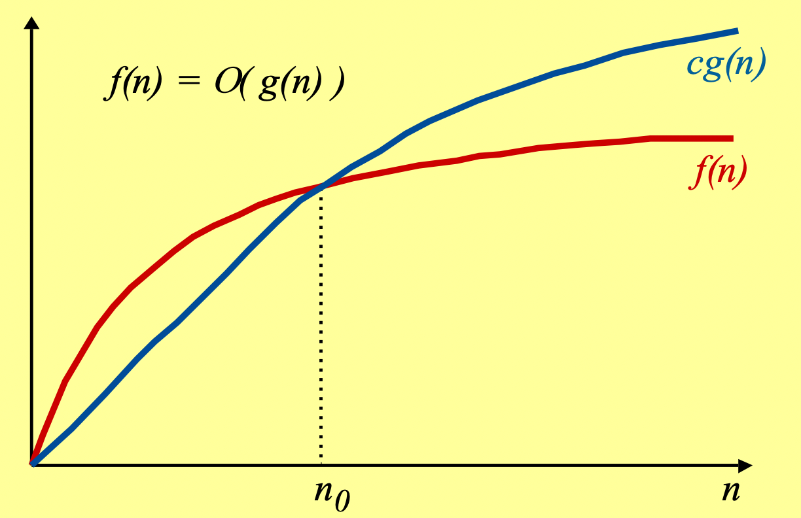
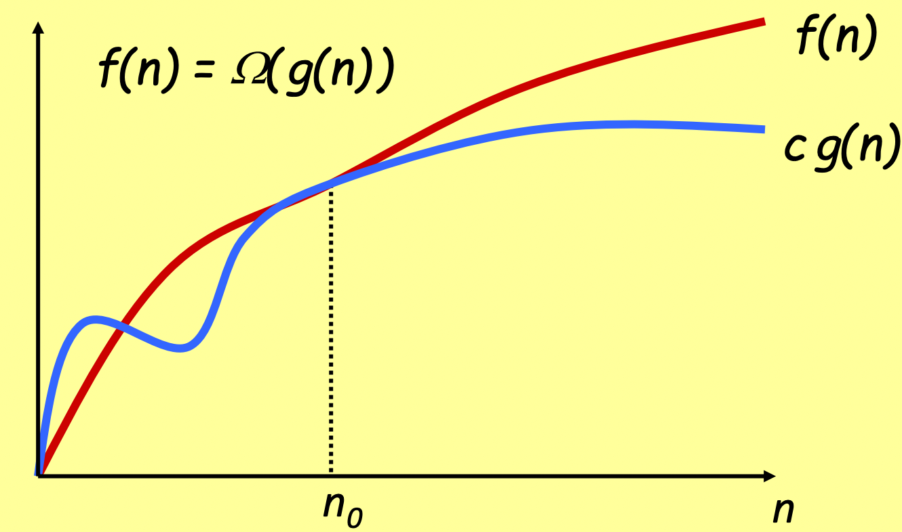
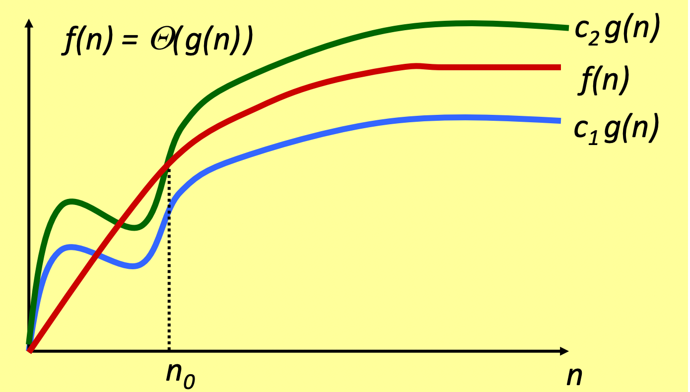
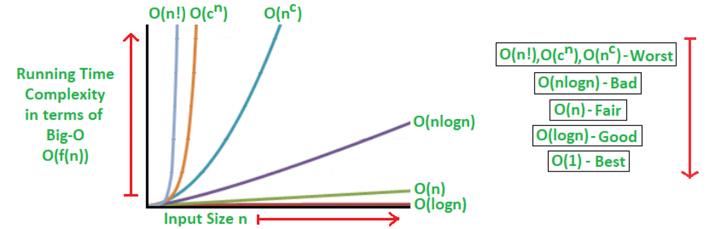
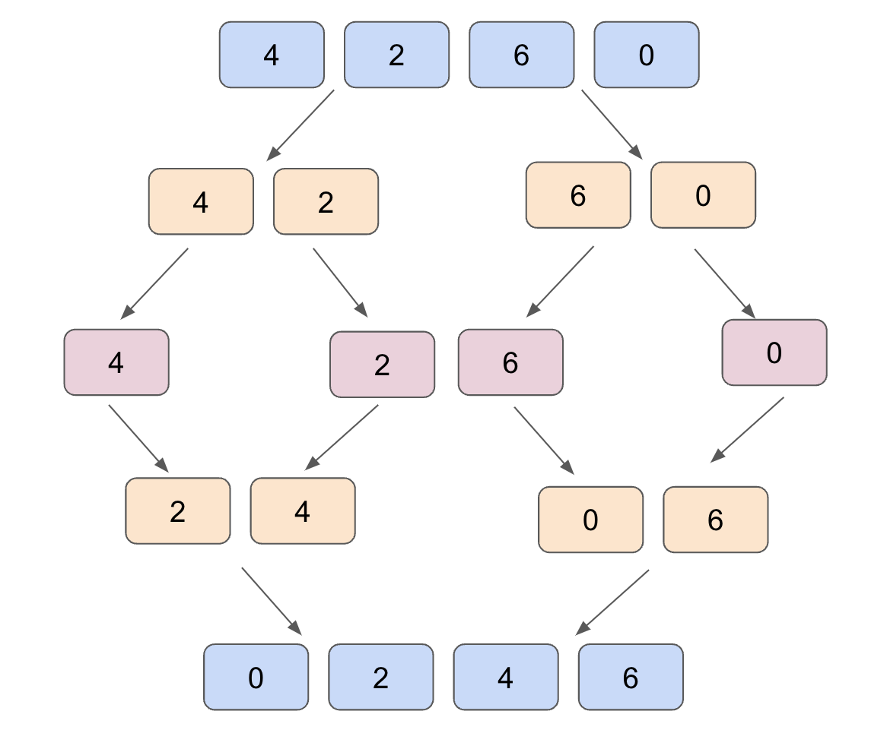

A Practical Approach to Algorithm Efficiency
Exploring Big O Notation, Runtime Efficiency, and Algorithmic Scalability.
December 17, 2024 · Algorithms
In my articles, I have often attempted to emphasize the fact that software engineering skills are essential even when working in AI, because at the end of the day what we produce is code. The same goes for algorithmic theory because Machine Learning algorithms are still algorithms, and understanding how to evaluate them is essential. For example, do you know how the attention mechanism scales in transformers?
I run the scripts using Deepnote: a cloud-based notebook that’s great for collaborative data science projects, good for prototyping
Basic Algorithm Analysis
When we study or develop an algorithm, it is essential to understand how much of what resources in terms of time and space it needs. Only in this way can we understand how it will scale. A sorting algorithm might seem optimal on a toy case where we have to sort an array of length 3, but be highly inefficient when we have an array of length 10M.
For this reason, it is not trivial to compare the performance of two different algorithms. One might seem faster in specific instances, and the other faster in others; we need a mathematical and formal method to properly evaluate them.
As we mentioned, an algorithm might behave differently depending on the input instance on which it works. But then in which instances is it right to monitor its performance? On the ones on which it is fastest? Or slower?
Usually, the worst-case running time is used. That way we are sure what will happen in the worst possible case. And if the worst-case is not that bad we are happy 😊.
Another method is to rely on the average-case. That is, we randomly create input instances, and average the running times. With this method, however, we have a fundamental problem: How do we choose those random instances?
Due to these problems, we prefer to rely on the worst-case scenario.
What does efficiency mean?
But if we don’t have a benchmark, how do we know how efficient an algorithm we develop is?
We can start with something simple. For every problem, we almost always have a naive algorithm that solves it, brute-force. This consists of searching the entire possible search space in order to find a solution. In short, we try them all! Obviously, this is very inefficient because the search space can be huge.
Then we must try to formalize efficiency on a mathematical plane on which we can agree. Let’s say an algorithm is efficient if it has a polynomial running time.
Hence if there exist two constants c, d > 0 such that on each input instance of length N the running time can be upper bounded by cN^d computational steps (which may correspond, for example, to assembly code instructions).
Thus the running time remains proportionally linear to the size of the input instance.
Asymptotic Notation
In Computer Science when we express the running time of an algorithm by a function we 𝙙𝙤 𝙣𝙤𝙩 𝙘𝙤𝙣𝙨𝙞𝙙𝙚𝙧 𝙩𝙝𝙚 𝙘𝙤𝙣𝙨𝙩𝙖𝙣𝙩𝙨 𝙖𝙣𝙙 𝙩𝙚𝙧𝙢𝙨 𝙤𝙛 𝙡𝙤𝙬𝙚𝙧 𝙤𝙧𝙙𝙚𝙧 𝙩𝙚𝙧𝙢𝙨. For a running time of the type 3.2n²+2n+6 we just say that it grows by a factor proportional to n². This is because, on large values of n, the most relevant term is n² and therefore, this is enough for us to get an idea of the speed of the algorithm.
Asymptotic Upper Bounds
Suppose we have two functions f(n) and g(n).
We say that 𝒇(𝒏) = 𝑶(𝒈(𝒏)) if there is a constant c > 0, and n_0 > 0 so that c* g(n) > f(n). So if from some point n_0, g(n) is always greater than f(n). Intuitively over large numbers, f(n) will never be worse than g(n).

Asymptotic Lower Bounds
We say that𝒇(𝒏) = Ω(𝒈(𝒏)) if there is a constant c > 0 so that g(n) from some point on (from n_0), g(n) is always less than f(n). Intuitively over large numbers f(n) will always be slower than g(n).

Asymptotic Tight Bounds
If f(n) is both O(g(n)) and Ω(g(n)), then f(n) grows just like g(n). Then we are able to find two constants c1 and c2 for which it holds that c1g(n) < f(n) < c2g(n). In this case, we say that 𝒇(𝒏) = Θ(𝒈(𝒏)).

Common Running Times
Among the most commonly used algorithms, such as sorting algorithms, there are bounds that recur often, such as O(n), O(log(n)), and O(n²). Therefore let’s look at some of them so that we can recognize patterns and know how to distinguish them when we find them in our work.

Linear Time
Algorithms of this type, have a bound of O(n). This means that for each item in the input (imagine the input as a list of n items) they need to process a constant number of operations. For example in the problem of finding the maximum of a list, we only need to look once at all the items in the list and save the largest one from time to time, thus requiring n steps.
def find_maximum(arr):
max_val = arr[0] # Initialize max_val with the first element of the array
# Iterate through the array to find the maximum value
for num in arr[1:]: # Start from the second element since we initialized max_val with the first
if num > max_val:
max_val = num # Update max_val if a larger value is found
return max_val
# Example usage:
array = [12, 45, 78, 23, 56, 91, 34, 67]
maximum = find_maximum(array)
print(f"The maximum value in the array is: {maximum}")Another example of an algorithm in linear time is one that performs the merge of two ordered lists while maintaining the order.
Here you can read the pseudocode of the algorithm:
MergeLists(list1, list2):
Initialize an empty list, mergedList, to store the merged result
Initialize pointers i, j for list1 and list2, respectively, starting at index 0
while i < length of list1 and j < length of list2:
if list1[i] <= list2[j]:
Append list1[i] to mergedList
Increment i by 1
else:
Append list2[j] to mergedList
Increment j by 1
// If elements are remaining in list1 or list2, append them to mergedList
while i < length of list1:
Append list1[i] to mergedList
Increment i by 1
while j < length of list2:
Append list2[j] to mergedList
Increment j by 1
return mergedListLet’s look at an implementation in Python now of this algorithm.
def merge_lists(list1, list2):
merged_list = [] # Initialize an empty list to store the merged result
i = j = 0 # Initialize pointers for list1 and list2, respectively
while i < len(list1) and j < len(list2):
if list1[i] <= list2[j]:
merged_list.append(list1[i]) # Append list1[i] to mergedList
i += 1 # Increment i by 1
else:
merged_list.append(list2[j]) # Append list2[j] to mergedList
j += 1 # Increment j by 1
# If elements remain in list1 or list2, append them to mergedList
while i < len(list1):
merged_list.append(list1[i])
i += 1
while j < len(list2):
merged_list.append(list2[j])
j += 1
return merged_list
# Example usage:
list1 = [1, 3, 5, 7]
list2 = [2, 4, 6, 8]
result = merge_lists(list1, list2)
print("Merged List:", result)O(nlog(n)) Time
This is a very common bound in computer science. Because it’s the time it takes to create recursive splits of the input n, working on the smaller splits created, and recombining the whole thing.
A classic example of this is mergesort, in which we divide the array into equal parts recursively, and each time we sort two pieces at a time to recombine everything.

Here is how to implement mergesort in Python.
def merge_sort(arr):
if len(arr) > 1:
mid = len(arr) // 2
left_half = arr[:mid]
right_half = arr[mid:]
merge_sort(left_half) # Sorting the left half
merge_sort(right_half) # Sorting the right half
merge(arr, left_half, right_half) # Merging the sorted halves
def merge(arr, left_half, right_half):
i = j = k = 0 # Initialize pointers for left_half, right_half, and arr
while i < len(left_half) and j < len(right_half):
if left_half[i] < right_half[j]:
arr[k] = left_half[i]
i += 1
else:
arr[k] = right_half[j]
j += 1
k += 1
# Checking for any remaining elements in left_half or right_half
while i < len(left_half):
arr[k] = left_half[i]
i += 1
k += 1
while j < len(right_half):
arr[k] = right_half[j]
j += 1
k += 1
# Example usage:
my_array = [12, 3, 67, 45, 9, 21, 34, 6]
print("Original array:", my_array)
merge_sort(my_array)
print("Sorted array:", my_array)Many algorithms have a computational cost of O(n*log(n)) because often the greatest cost is just in sorting an array.
Quadratic Time
Suppose the problem in which we have n points on the Cartesian plane. Each point is represented by coordinates (x,y). I want to figure out what is the shortest distance between two points. A simple algorithm could take all pairs of points, calculate their distance, and take the pair with minimum distance. But how long does it take?
Well to take all the pairs, we can use combinatorial calculus, and this has a cost of O(n²). Instead, we can calculate the distance between two points in a constant way using a simple formula. So the total cost of the algorithm is still quadratic.
More pragmatically, we can say that we encounter quadratic cost algorithms when we have two nested for loops. In which we scan a list twice:
For each input point(x_i, y_i):
For each other input point (x_i, y_i):
Compute distance dIn Python it would be:
import math
def calculate_distance(point1, point2):
# Calculate Euclidean distance between two points
return math.sqrt((point2[0] - point1[0])**2 + (point2[1] - point1[1])**2)
def min_distance(points):
min_dist = float('inf') # Initialize with positive infinity as an initial minimum distance
# Iterate through each point and calculate distances
for i in range(len(points)):
for j in range(i + 1, len(points)):
dist = calculate_distance(points[i], points[j]) # Calculate distance between points[i] and points[j]
if dist < min_dist: # Update minimum distance if a smaller distance is found
min_dist = dist
return min_dist
# Example usage:
input_points = [(1, 2), (4, 6), (7, 8), (3, 5), (9, 1)]
result = min_distance(input_points)
print("Minimum distance between two points:", result)
Final Thoughts
Knowing how to calculate the time (and even space) complexity of an algorithm is very important. If an algorithm is poorly thought out, even the best programmer in the world will not bring the code so efficiently that it is usable.
There are techniques that allow us to convert temporal complexity into spatial complexity, such as dynamic programming, which we will see in the following article. We can also have some trade-offs, developing algorithms that give a correct result with some probability but are faster.
Moreover, when it comes to interviews, this is one of the most important topics to know about!
I hope this article has helped you in some small way to get an idea of this wide world!
If you are interested in this article follow me on Medium! 😁
💼 Linkedin ️| 🐦 Twitter | 💻 Website
This article was previously published on Towards Data Science